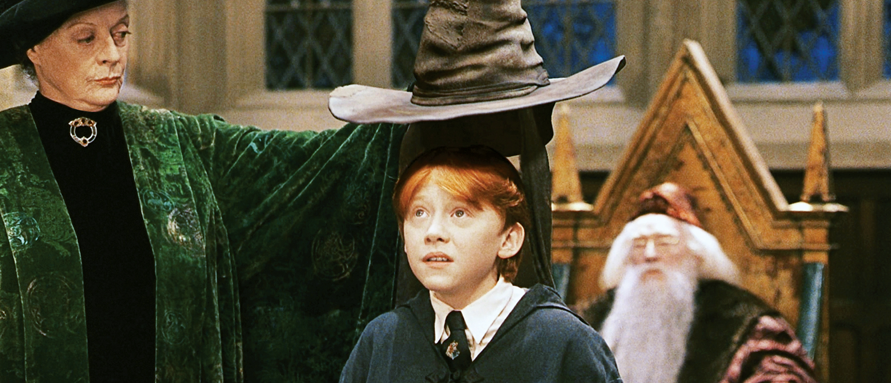

Challenges.
Our main challenge in this lab was to make sure that our button and input from our js files was able to be connected to our HTML files.
Problems.
One main problem I had occured during section when I was trying to do the lab using jquery as one of my classmates suggested.
It went well after a bit, but I struggled to rewire my brain to use jquery instead of just the js methods.
Results.
In the end, I was able to get the sorting hat method working well as you can see below!
The magic of the sorting hat!